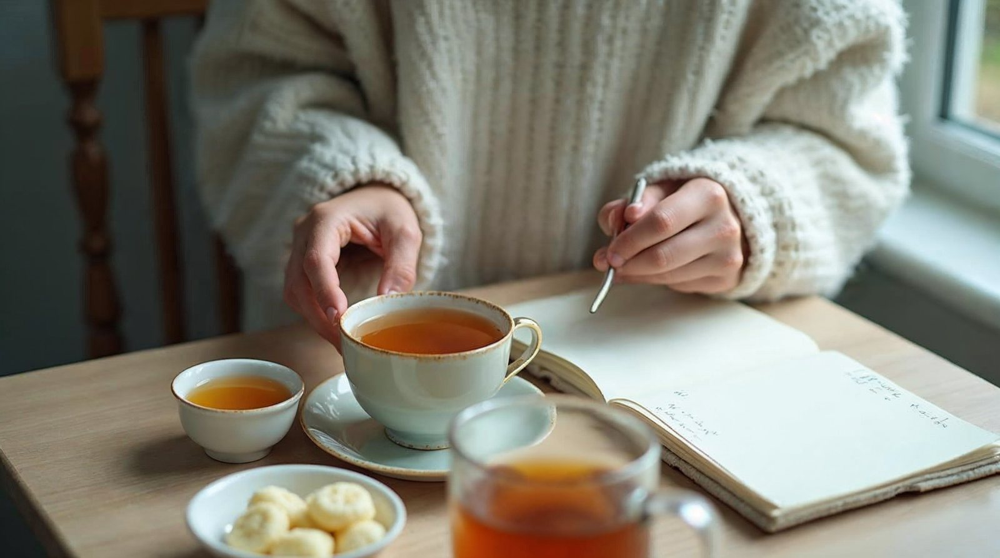
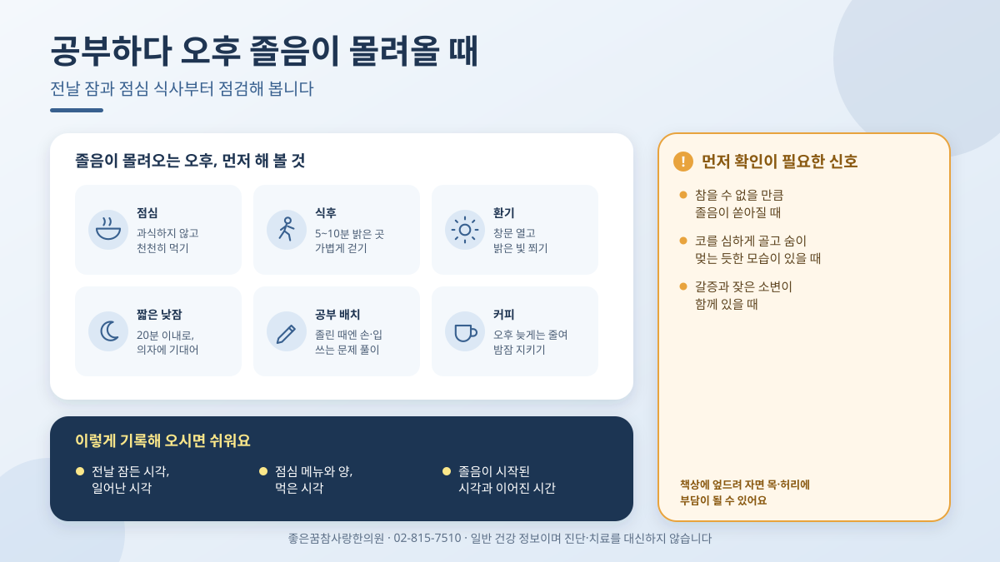

이종호 한의사 감수좋은꿈참사랑한의원 대표원장 (한의사 면허번호 19769)발행 2026-11-22 · 수정 2026-11-26
이 글의 차례
오후 두 시 반, 독서실 칸막이 안입니다. 점심은 학원 앞에서 컵밥으로 십 분 만에 해결했습니다. 오답 노트를 펴고 펜을 쥐었는데, 같은 해설을 벌써 세 번째 읽고 있습니다.
잠깐 눈을 감았다 뜨니 노트 위에 펜 자국이 길게 그어져 있습니다. 시계를 보면 이십 분이 훌쩍 지나 있고, 아깝다는 생각보다 자책이 먼저 올라옵니다. 찬물로 세수를 하고 와도 눈꺼풀은 금세 다시 무거워집니다.
진료실에서 수험생들이 이런 말씀을 자주 하십니다. "오후만 되면 제가 너무 한심해요." 졸음을 의지가 약한 탓으로 돌리고 스스로를 다그치는 분이 많습니다. 계획표가 날마다 오후에 무너지는 것을 지켜보는 마음이 얼마나 조급할까 싶습니다.
먼저 답부터 드리겠습니다. 점심 뒤 한두 시간쯤 처지는 것은 하루 리듬에서 흔한 일이라, 그 자체로 크게 걱정하실 일은 아닙니다. 다만 그 처짐을 키우는 것들이 있습니다. 전날 잠과 들쭉날쭉한 기상 시각, 급하게 먹는 점심, 오후 늦게까지 이어지는 카페인, 답답한 자리입니다.
이 네 가지를 먼저 정리해 보시고, 도저히 못 견디겠다면 오후 3시 전에 20분 안쪽으로 짧게 눈을 붙이세요. 그래도 몇 주씩 기운이 없고 아무것도 하기 싫은 날이 이어진다면 졸음이 아닌 다른 신호일 수 있어 진료를 받아 보시길 권합니다.
왜 오후만 되면 이렇게 처질까요
사람의 하루에는 원래 정신이 조금 느슨해지는 시간대가 있고, 이른 오후가 그중 하나로 알려져 있습니다. 점심을 거른 날에도 오후 두세 시쯤 멍해지는 분이 있는 걸 보면, 졸음을 전부 밥 탓으로 돌릴 수는 없습니다.
여기에 전날 잠이 얹힙니다. 늦게 잔 날은 물론이고, 평일에 모자란 잠을 주말에 몰아 자서 일어나는 시각이 들쭉날쭉할 때도 오후가 무거워지기 쉽습니다. 몸이 언제 깨어 있고 언제 쉬어야 하는지 헷갈리기 때문입니다.
점심도 큰 몫을 합니다. 컵밥이나 덮밥처럼 밥 위주의 한 그릇을 십 분 만에 먹고 바로 앉으면 식후 나른함이 더 크게 느껴질 수 있습니다. 잠을 설친 날에는 식욕 조절이 흔들려 평소보다 많이, 달게 먹게 되는 일도 흔합니다.
끼니 간격도 봐야 합니다. 아침을 거르고 빈속에 커피로 버티다 점심이나 저녁에 몰아서 먹는 날이 이어지면, 오후에 기운이 바닥나는 느낌이 들기 쉽습니다.
자리도 한몫합니다. 환기가 안 되는 더운 독서실, 어둑한 조명, 구부정하게 말린 자세는 몸을 더 무겁게 만듭니다. 물 대신 커피와 단 음료만 마시는 날에도 오후가 빨리 지칩니다.
- 원래 정신이 느슨해지는 이른 오후의 리듬
- 모자란 잠과 들쭉날쭉한 기상 시각
- 급하게 먹는 밥 위주 점심, 거르거나 몰아 먹는 끼니
- 환기 안 되는 자리, 구부정한 자세, 모자란 물
저는 소화와 잠, 기분이 서로 이어져 있다고 봅니다. 그래서 여러 불편이 겹쳐 있을 때 식사 리듬부터 정리해 보자고 말씀드리는 경우가 많습니다.
졸음과 피로, 마음의 처짐은 조금씩 다릅니다
오후에 처진다는 말 안에는 서로 다른 상태가 섞여 있습니다. 나누어 보면 무엇부터 할지가 보입니다.
졸음은 눈꺼풀이 무겁고 고개가 떨어지지만, 이십 분쯤 눈을 붙이거나 밖에서 바람을 쐬면 한결 개운해지는 경우가 많습니다. 이런 졸음은 대개 잠과 점심, 자리를 손보는 데서 시작합니다.
피로는 조금 다릅니다. 일곱 시간 가까이 자도 아침부터 몸이 무겁고, 낮잠을 자도 풀리지 않습니다. 이런 상태가 한 달 넘게 이어진다면 잠의 질이나 빈혈, 갑상선처럼 검사로 확인할 원인이 없는지 함께 살펴야 합니다.
마음의 처짐은 또 다릅니다. 졸리다기보다 아무것도 하기 싫고, 좋아하던 일에도 흥미가 줄고, 아침부터 마음이 무겁습니다. 이런 날이 2주 넘게 거의 매일 이어진다면 혼자 버티지 마시고 정신건강의학과 진료나 상담을 받아 보세요.
마음이 지친 것도 몸이 지친 것만큼 돌봐야 할 일입니다. 졸음인 줄 알고 커피만 늘려 왔는데, 사실은 마음이 먼저 지쳐 있던 경우도 드물지 않습니다.
이런 분들을 자주 뵙습니다
특정한 누구의 이야기가 아니라, 오후 졸음으로 오시는 수험생들에게서 자주 겹쳐 보이는 모습입니다.
예를 들어 밤에 공부가 잘된다며 새벽 두세 시에 자고 늦게 일어나는 수험생이라면, 오후만 되면 기운이 없다고 하십니다. 이런 분과는 잠드는 시각보다 일어나는 시각부터 고정하는 방법을 함께 의논합니다. 일어나는 시각이 자리를 잡으면 잠드는 시각도 따라오는 경우가 많습니다.
예를 들어 아침을 거르고 빈속에 커피로 버티다 점심을 몰아서 먹는 경우도 있습니다. 오후 졸음과 함께 속쓰림을 이야기하시기도 합니다. 이때는 커피를 줄이라는 말보다 끼니 간격부터 다시 맞추자고 말씀드립니다.
예를 들어 모의고사 성적이 나온 뒤로 몇 주째 오후마다 멍하니 앉아 있게 된다는 분도 계십니다. 이야기를 나눠 보면 잠도 얕고, 밥맛도 없고, 마음이 많이 가라앉아 있습니다. 이런 분께는 생활 리듬과 함께 마음 상태를 조심스럽게 여쭙고, 필요하면 정신건강의학과 진료도 함께 말씀드립니다.
먼저 이렇게 여쭙니다
- 어젯밤 몇 시에 잠들고 오늘 몇 시에 일어났나요? 주말에는 어떤가요?
- 점심은 몇 시에, 무엇을, 몇 분 만에 드시나요?
- 졸음이 오는 시각이 매일 비슷한가요? 낮잠을 자면 개운한가요?
- 커피나 에너지 음료를 하루에 몇 잔, 몇 시까지 마시나요?
- 요즘 기분은 어떤가요? 좋아하던 일에도 흥미가 줄었나요?
대답이 다 정리되어 있지 않아도 괜찮습니다. 마음 이야기는 편하신 만큼만 하셔도 됩니다. 맥을 짚으면서 하나씩 천천히 여쭙겠습니다.
점심은 무엇을 먹느냐보다 어떻게 먹느냐부터
컵밥이 나쁜 한 끼라는 말씀을 드리려는 것은 아닙니다. 시간에 쫓기는 수험생에게는 고맙고 든든한 끼니입니다. 다만 서서 급하게 먹고 곧장 책상 앞에 앉는 흐름은 조금 바꿔 볼 만합니다.
먹는 시각을 날마다 비슷하게 두고, 되도록 자리에 앉아 천천히 드세요. 밥만 가득 먹기보다 달걀이나 두부, 나물 같은 반찬을 곁들이고, 배가 꽉 차기 전에 숟가락을 내려놓으면 오후의 부담을 덜 수 있습니다.
아침은 가볍게라도 챙겨 드세요. 빈속으로 오전을 버티면 점심에 허겁지겁 많이 먹게 되기 쉽습니다.
오후에 입이 심심해 단 음료나 과자를 찾을 때도 있지요. 잠깐 기운이 나는 듯하다가 금방 다시 처지는 분이 많으니, 간식이 필요하다면 견과류 한 줌이나 우유처럼 가벼운 것으로 바꿔 보세요.
카페인은 양과 시각을 함께 봅니다
오후에 졸음이 몰려오면 커피나 에너지 음료부터 손이 가는 마음을 압니다. 그 마음을 탓하고 싶지는 않습니다. 다만 카페인은 잠깐 버티게 해 줄 뿐 모자란 잠을 채워 주지는 못해서, 얼마나, 언제 마시는지를 꼭 함께 봐야 합니다.
식약처는 하루 카페인 섭취 권고량을 성인은 400mg 이하, 청소년은 체중 1kg당 2.5mg 이하로 안내합니다. 체중이 50kg인 학생이라면 하루 125mg 안쪽입니다.
커피 전문점 커피는 잔 크기와 샷 수에 따라, 에너지 음료는 제품마다 카페인 양이 달라 생각보다 금방 이 선을 넘기도 합니다. 캔이나 병에 적힌 카페인 함량을 한 번쯤 확인해 하루치를 더해 보세요.
시각도 중요합니다. 오후 늦게 마신 카페인은 밤잠을 흔들고, 얕게 잔 다음 날 오후에는 더 졸려서 또 마시게 됩니다. 커피는 점심 무렵까지만 드시고, 그 뒤에는 물이나 보리차로 바꿔 보세요. 빈속에 마시는 커피는 속을 쓰리게 하기 쉬워 끼니와 함께 드시는 편이 좋습니다.
갑자기 끊으면 머리가 띵하고 더 처지는 분도 있습니다. 하루 양을 정해 며칠에 걸쳐 조금씩 줄이시면 됩니다. 카페인을 마신 뒤 가슴이 심하게 두근거린다면 더 마시지 말고 병원에서 확인해 보세요. 가슴이 조이듯 아프거나 숨이 차고 쓰러질 것 같다면 가까운 응급실로 가셔야 합니다.
낮잠은 짧게, 앉은 채로
도저히 눈이 감긴다면 억지로 버티기보다 짧게 자는 쪽을 권합니다. 오후 3시 전에, 20분 안쪽으로요. 그보다 길게 자면 깨어난 뒤 더 멍하고, 그날 밤 잠드는 시각이 늦어지기 쉽습니다.
자세도 챙겨 주세요. 고개를 옆으로 돌린 채 책상에 엎드려 자면 목과 허리가 꺾인 채 버팁니다. 의자에 등을 기대고 눈을 감거나, 꼭 엎드려야 한다면 팔 위에 이마를 대고 정면으로 엎드리는 편이 덜 부담스럽습니다.
알람은 휴대폰보다 손목시계로 맞춰 두세요. 깨자마자 화면을 보다가 쉬는 시간이 길어지는 일이 줄어듭니다. 주말에 몰아서 자는 것도 조심하세요. 평일보다 한 시간 넘게 늦게 일어나면 월요일 오후가 유난히 무거워지기 쉽습니다.

일상에서 먼저 해 볼 수 있는 것
- 일어나는 시각을 주말까지 같게 맞추기
- 점심은 정해진 시각에, 반찬과 함께 천천히 먹기
- 점심 뒤 바로 앉지 말고 10분쯤 햇빛 아래 걷고 들어오기
- 물병을 자리에 두고 조금씩 자주 마시기
- 쉬는 시간마다 창문을 열어 환기하기
- 졸리는 시간대에는 문제 풀이나 소리 내어 설명하기처럼 손과 입을 쓰는 공부 배치하기
어려운 과목은 머리가 맑은 오전에 두고, 오후의 처지는 시간은 '안 되는 시간'이 아니라 '다른 공부를 하는 시간'으로 계획표에 미리 넣어 두세요. 졸음과 싸우는 대신 졸음이 오는 시각을 알아 두는 것만으로도 마음이 덜 조급해집니다.
저녁은 잠들기 세 시간 전쯤 가볍게 마치는 편이 좋습니다. 늦은 야식은 잠을 얕게 하고, 얕은 잠은 다음 날 오후로 고스란히 넘어옵니다.
한의원에서 함께 살필 수 있는 경우
- 잠과 점심을 정리해 봤는데도 오후 처짐이 몇 주째 그대로인 경우
- 오후 졸음과 함께 속이 더부룩하거나 소화가 무거운 경우
- 커피나 단 음식 없이는 하루를 버티기 어려운 경우
- 자도 개운하지 않고 잠과 기분이 함께 흔들리는 경우
처음 오시면 하루가 어떻게 흘러가는지부터 듣습니다. 잠든 시각과 일어난 시각, 끼니, 카페인, 공부하는 자리, 요즘 마음 상태를 차례로 여쭙고, 모든 분께 그렇듯 양손의 맥을 짚습니다. 필요하다고 판단되면 혀와 배를 살피기도 합니다.
피로가 오래 이어졌다면 빈혈이나 갑상선처럼 혈액검사로 확인할 원인이 있을 수 있어, 내과에서 검사를 받아 보시도록 안내합니다. 그 결과와 진맥, 생활 기록을 함께 놓고 침이나 한약 상담, 생활 리듬 조정 가운데 무엇부터 할지 말씀드립니다.
"보약부터 먹어 볼까요?" 하고 물으시는 분도 계십니다. 저는 무엇을 채울지보다 왜 기운이 떨어졌는지를 먼저 보는 것이 순서라고 생각합니다. 잠과 끼니가 무너져 있다면 그것부터 같이 정리하자고 말씀드립니다.
불안이나 우울이 깊어 보이면 정신건강의학과 진료를 먼저 권해 드리기도 합니다. 이미 정신건강의학과 치료를 받고 계시다면 그 치료를 이어 가시는 것이 우선이고, 드시는 약 이름만 알려 주시면 됩니다.
이렇게 기록해 오시면 상담이 쉬워집니다
- 일주일 동안 잠든 시각, 일어난 시각, 낮잠 시간
- 점심 시각과 메뉴, 먹는 데 걸린 시간
- 졸음이 시작된 시각과 이어진 시간
- 커피·에너지 음료를 마신 시각과 양
- 하루 기분을 0부터 10까지 적은 숫자
일주일치가 모이면 어느 요일, 어느 시각에 몸이 가장 힘들어하는지 저도 환자분도 조금 더 분명하게 보게 됩니다. 평일과 주말을 나란히 놓고 보는 것도 좋습니다.
이런 증상은 먼저 확인이 필요합니다
- 밤에 충분히 자도 낮에 참을 수 없이 졸리거나, 수업 중에 갑자기 잠드는 일이 잦은 경우
- 코를 심하게 골거나 자다가 숨이 멈춘다는 말을 들은 경우
- 스스로를 해칠 생각이 들면 ☎ 109로 바로 연락하세요.
이런 신호가 있으면 한의원보다 가까운 병원이나 응급실을 먼저 찾으세요.
마치며
오후에 꾸벅 졸았다고 그날 하루가 실패한 것은 아닙니다. 몸은 원래 그 시간에 조금 쉬어 가고 싶어 합니다. 그걸 알고 계획을 짜는 것과 모른 채 자신을 탓하는 것은 다릅니다.
힘이 있는 날에만 하지 말고, 힘이 없는 날에는 힘이 없는 만큼 하시면 됩니다. 기상 시각 하나, 점심 뒤 십 분 걷기 하나처럼 작게 시작해 보세요. 못 지킨 날이 있어도 스스로를 탓하지 말고 다음 날 다시 하면 됩니다.
다음에 진료실에서 뵈면, 저는 지난 일주일 동안 몇 시에 일어나셨는지, 그리고 점심을 몇 분 만에 드셨는지부터 여쭙겠습니다.
함께 읽으면 좋은 글
- 커피와 에너지 음료로 버티다 밤에 잠이 안 올 때는 어떻게 하나요?
- 잠과 컨디션을 위해 식사 시간과 목욕부터 바꾸라는 이유는 뭔가요?
- 피곤함이 오래가면 혈액검사가 필요한가요?

여쭙는 것
- 어젯밤 몇 시에 잠들고 오늘 몇 시에 일어났나요? 주말에는 어떤가요?
- 점심은 몇 시에, 무엇을, 몇 분 만에 드시나요?
- 졸음이 오는 시각이 매일 비슷한가요? 낮잠을 자면 개운한가요?
생활에서 해 볼 것
- 일어나는 시각을 주말까지 같게 맞추기
- 점심은 정해진 시각에, 반찬과 함께 천천히 먹기
- 점심 뒤 바로 앉지 말고 10분쯤 햇빛 아래 걷고 들어오기
한의원에서 함께 살필 것
- 잠과 점심을 정리해 봤는데도 오후 처짐이 몇 주째 그대로인 경우
- 오후 졸음과 함께 속이 더부룩하거나 소화가 무거운 경우
- 커피나 단 음식 없이는 하루를 버티기 어려운 경우
먼저 확인이 필요한 신호
- 밤에 충분히 자도 낮에 참을 수 없이 졸리거나, 수업 중에 갑자기 잠드는 일이 잦은…
- 코를 심하게 골거나 자다가 숨이 멈춘다는 말을 들은 경우
- 스스로를 해칠 생각이 들면 109로 바로 연락하세요.
한눈에 보는 표
| 구분 | 핵심 |
|---|---|
| 여쭙는 것 | 어젯밤 몇 시에 잠들고 오늘 몇 시에 일어났나요? 주말에는 어떤가요? 점심은 몇 시에, 무엇을, 몇 분 만에 드시나요? |
| 생활에서 해 볼 것 | 일어나는 시각을 주말까지 같게 맞추기 점심은 정해진 시각에, 반찬과 함께 천천히 먹기 |
| 한의원에서 함께 살필 것 | 잠과 점심을 정리해 봤는데도 오후 처짐이 몇 주째 그대로인 경우 오후 졸음과 함께 속이 더부룩하거나 소화가 무거운 경우 |
| 먼저 확인이 필요한 신호 | 밤에 충분히 자도 낮에 참을 수 없이 졸리거나, 수업 중에 갑자기 잠드는 일이 잦은 경우 코를 심하게 골거나 자다가 숨이 멈춘다는 말을 들은 경우 |
자주 묻는 질문
커피를 마시면 해결되나요?
잠깐 졸음을 덜 수는 있지만, 오후 늦게 마시면 밤잠을 흔들어 다음 날 오후가 더 무거워지기 쉽습니다. 점심 무렵까지만, 하루 양을 정해 마시도록 안내하고, 청소년은 식약처 권고량(체중 1kg당 하루 2.5mg 이하)을 넘지 않게 해 주세요.
낮잠을 자도 되나요?
오후 3시 전에 20분 안쪽으로 짧게 자는 것은 괜찮습니다. 길게 자면 깨어난 뒤 더 멍하고 밤잠이 늦어질 수 있습니다.
책상에 엎드려 자도 되나요?
고개를 옆으로 돌린 채 오래 엎드리면 목과 허리에 부담이 됩니다. 의자에 등을 기대고 눈을 감거나, 팔 위에 이마를 대고 정면으로 엎드려 짧게 쉬세요.
보약이나 공진단을 먹으면 오후에 덜 처질까요?
그렇게 약속드리기는 어렵고, 공진단이 공부에 도움이 된다고 말씀드릴 근거도 아직 없습니다. 기운이 떨어진 이유가 잠인지, 끼니인지, 마음인지 먼저 살피고, 한약이 필요한지는 진맥과 상담을 한 뒤 함께 정합니다.
한의원에서는 무엇을 보나요?
잠과 끼니, 카페인, 공부하는 자리, 마음 상태를 함께 여쭙고 모든 분의 맥을 짚습니다. 필요하면 혀와 배를 살피고, 검사가 먼저 필요해 보이면 내과나 정신건강의학과를 안내합니다.
좋은꿈참사랑한의원은 재진 때 지난번 이야기부터 이어서 여쭙니다. 진료시간과 예약은 오시는 길에서 확인하세요.
어디서 상담받을 수 있나요?
좋은꿈참사랑한의원은 서울 동작구 만양로2길 2 신성빌딩 3층·5층(서울 동작구 상도동, 7호선 상도역 3번 출구 근처)에 있습니다. 한의사 3명(이종호 대표원장, 조영기 수석진료원장, 정원영 진료원장)이 진료합니다. 진료시간은 평일 09:30~20:00(점심 13:00~14:00), 토·일·공휴일 09:30~15:00이며, 방문 전 전화로 확인을 권합니다. 예약은 네이버 예약, 카카오톡 상담, 전화 02-815-7510로 받습니다.
이 글은 일반적인 건강 정보이며 개인의 진단이나 치료를 대신하지 않습니다. 증상이 있거나 복용 중인 약이 있다면 진료를 통해 확인하세요. 치료 효과는 개인마다 다를 수 있습니다.
작성 기준: 일반적으로 알려져 있는 건강 정보를 참고해 정리했습니다(대표원장 감수). 증상 기록은 1~2주 동안 하루 1회, 비슷한 시간에 적어 오시면 지난 상태와 비교하기 쉽습니다.